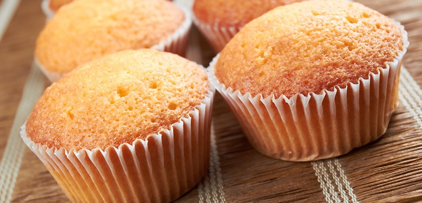

Vanilla muffins
Ingredients
- 4 Cups of flour.
- 2 Cups of sugar.
- 1 Tablespoon + 2 teaspoons baking powder.
- 1 Teaspoon salt.
- 2 Cups of milk.
- 2 Large eggs.
- 1 Tablespoon of vanilla extract.
- 8 Tablespoons of melted butter.
Steps to follow

- Preheat the oven to 220ºC.
- In a large bowl combine the flour, sugar, baking powder and salt. In a small bowl beat eggs together with milk, melted butter and vanilla.
- Place the mixture of liquid ingredients in the dry ingredients, integrating and beating well. You have ready the mass of vanilla muffins.
- Now serve the dough in the muffin pans, which can be lined up in a common roasting pan, or you can use a special muffin pan.
- Bake for 20 minutes in the oven.
- Ready!